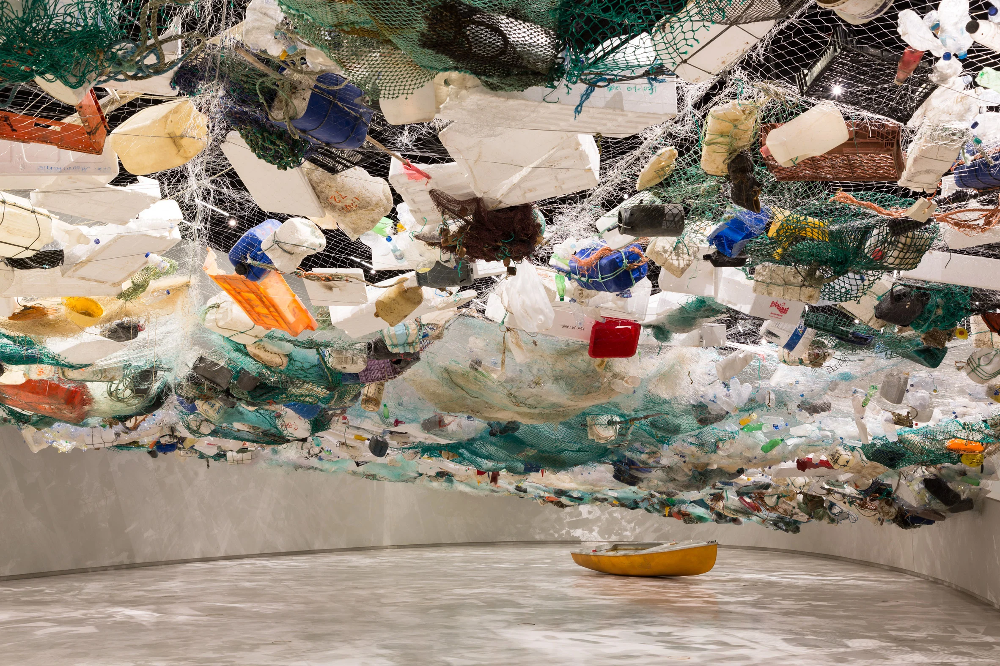

Βιοποικιλότητα
Αμέτρητα είδη ζώων ζουν στη θάλασσα και κινδυνεύουν όταν τη μολύνουμε

Σκουπίδια στις θάλασσες
Το έργο τέχνης δημιουργήθηκε από απορρίματα που βρέθηκαν στη θάλασσα

Μάθετε περισσότερα
Διαβάστε παρακάτω πώς μπορείτε να βοηθήσετε